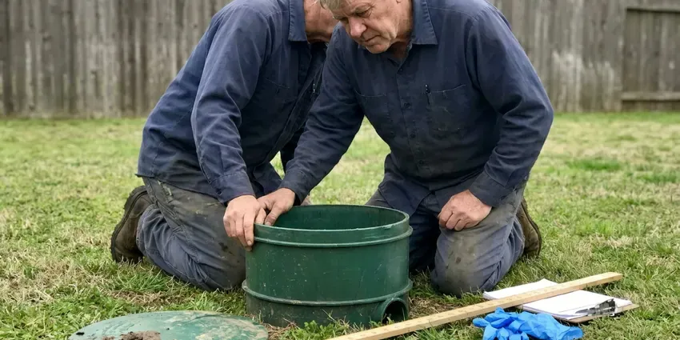

Slab Leak Repair in Manchester, NH
A slab leak repair in Manchester, NH comes down to two choices. FVR Plumbing prices both in writing.
- Quick Leak Locating
- Small Concrete Cuts
- Upfront Pricing
- New Hampshire Licensed Plumbers

Need Slab Leak Repair in Manchester, NH?
A licensed plumber tests the lines and marks the leak before the saw comes out.
Fast Slab Leak Repair in Manchester, NH for Hot and Cold Water Lines
FVR Plumbing technicians in Manchester, NH fix pinholes in copper, split PEX and the loose fittings in between. Each one needs a different repair. Copper might get a new section of Type L with sweated joints, while PEX usually gets a new expansion or crimp fitting, and either way the line gets pressure tested before the hole is closed.
Our expertise includes:
- Tunneling from the yard
- Radar scans before cutting post-tension slabs
- Careful concrete cutting and patching

Additional Plumbing Repair Services in Manchester, NH
We offer expert plumbing repair services across Manchester, NH to fix leaks, restore flow, and keep your system running smoothly.




Septic Tank Repair in Manchester

Customers
Why Choose FVR Plumbing for Slab Leak Repair in Manchester, NH?
Hiring FVR Plumbing gets you a fix that lasts, not a clamp and a promise. Every repair is done to code in New Hampshire, with permits pulled when needed.
- Local Knowledge, We know how soil here moves and what that does to pipe under slabs in New Hampshire.
- Repairs That Hold, From a spot repair through the floor to a full reroute, we build each fix to last.
- Clear Comparisons, You see the cost of each repair option next to each other.
Citywide Coverage
Anywhere in Manchester, NH, FVR Plumbing can get a tech to you quickly. Slab leaks go to the front. A running leak under the slab does damage hourly, so we schedule it more like a burst pipe than a routine service call and try to get detection done within a day.
Experienced Team
Our reroute crews run new PEX through attics and walls with small, clean openings. Attics get hot. They plan the route before cutting drywall, use existing chases where they can and keep the openings to a few at fixture walls, which makes patching quick for you or your drywall contractor.
Safety-First Approach
Before cutting any slab, we scan for post-tension cables and rebar. That scan is never skipped. A cut tendon can release with real force and costs thousands to fix, so radar runs first, and we also shut off electrical circuits near the work area before the saw starts.
Trusted Certified Manchester Plumbing Services Professionals
At FVR Plumbing, we are proud to offer certified plumbing services throughout Manchester, NH. Those papers on the wall mean something. Every repair, install and maintenance visit follows strict safety and quality rules, and the plumbers doing the work carry recognized industry credentials.
Call Us Now PHCC Plumbing Contractor Recognition
PHCC Plumbing Contractor Recognition Better Business Bureau (BBB) Accreditation
Better Business Bureau (BBB) Accreditation Angi Certified Pro
Angi Certified Pro ISO 9001 Quality Management Certification
ISO 9001 Quality Management CertificationLocating and Repairing Slab Leaks in Manchester, NH
Cold Water Slab Leak Repair in Manchester
Cold leaks don't make warm spots. The bill gives them away. They show up as a higher bill, a meter that turns with every faucet off, or a patch of carpet that stays damp, and they soak the soil just as much as hot leaks do. Your Manchester home is no exception. We isolate the cold line and repair or reroute it.

Slab Leak Pipe Rerouting in Manchester
A reroute abandons the leaking pipe under the slab. New line goes overhead. For older Manchester homes, this works well with aging copper or galvanized pipe, since it bypasses every foot of buried line on that run. We cut small openings at fixture walls.
Residential Slab Leak Repair in Manchester
Working in an occupied home means planning around your day. We protect the floors first. Dust gets contained with plastic sheeting, the cut area is kept small, and the water stays on for the rest of the house while we work on one line, so you can still cook and shower. Manchester homeowners get a clean site at the end.
Slab Leak Reroute in Manchester
Older copper under a slab tends to leak again. Rerouting ends that. New PEX runs through the attic and down the walls while the old pipe stays buried, with openings placed behind vanities or in closets.
Emergency Slab Leak Services in Manchester
A burst line under the slab can push water through grout lines in a few hours. Shut the main first. A crew comes out to isolate the broken line, cap it so the rest of the house has water, and make a temporary or permanent repair depending on what we find. That goes for anywhere in Manchester.
Emergency Slab Leak Repair in Manchester, NH
A large slab leak can push water up through flooring or into walls quickly. Shut off the main. On the phone, we help you close the shutoff, then a technician arrives to isolate the leaking line so the rest of the house has water while we plan the permanent repair.
Commercial Slab Leak Repair in Manchester, NH
Commercial slabs in Manchester carry longer pipe runs and more branches. It means more line to test. We isolate branches one at a time, locate the leak and schedule cutting for after hours or a weekend, so your doors stay open and your customers never see a saw. Work meets New Hampshire code and stays within code.

Thermal and Acoustic Tools in Manchester
A thermal camera shows the warm streak a hot water leak leaves on the floor. Cold leaks need the mic. On cold lines we rely on an acoustic sensor that listens through the slab, marking the point where the sound is loudest. Both tools ride on every Manchester truck.
Local Slab Leak Repair in Manchester, NH
Searching 'slab leak repair near me' in Manchester, NH? FVR Plumbing has techs working around town every day. A detection visit can usually happen within a day or two, and the first truck brings everything needed to find the leak. No second trip.
Local plumbing has local habits. Each era of homes was plumbed its own way. We know which subdivisions used copper under the slab and which used PEX, so we can guess the failure before testing starts. That is local Manchester knowledge.
FVR Plumbing at a Glance
- Fully licensed plumbing team covering Manchester, NH
- 24/7 emergency service with same-day scheduling
- Clear written estimates, no hidden fees
- 4.9-star rated by 840+ New Hampshire customers
Manchester Map
Manchester Information
- Population
- 115,474
- Area codes
- 603/978/351
- Service area
- Manchester and towns within a 40 mile drive
- Nearby
- Londonderry, Derry, Nashua, Concord
The housing stock in New Hampshire includes many old farmhouses and village homes, often with cast iron drains and galvanized supply lines. With supply lines buried under concrete, hot water, minerals and soil shifts make slab leaks one of the more common repairs we do in Manchester, NH.
Talk to a Plumber
Call FVR Plumbing for reliable plumbing work done by licensed pros in Manchester, NH.
Our Specialized Plumbing Services in Manchester, NH
At FVR Plumbing, we handle the full list of plumbing services across Manchester, NH. From leak detection to full system installs, our team works fast and charges fair prices on homes and commercial properties alike. Take a look at our core services below:


What Happens on a Slab Leak Call in Manchester, NH
We isolate the lines and locate the break before we ever cut into your Manchester, NH floor.
Book an Appointment
Call FVR Plumbing at (844) 442-1569. We ask about the symptoms and set a time that works.
Find the Leak
Our technician arrives with locating gear and marks the exact spot without unnecessary damage.
Choose a Repair
You get a written price for direct access, a reroute or tunneling, with what each one involves.
Frequently Asked Questions About Slab Leak Repair in Manchester
Most slab leak repairs in Manchester, NH land between $1,000 and $5,000. Access drives the price. A direct repair in an open room sits at the low end, while a long reroute or a tunnel under a wall runs toward the top of that range or beyond it. The estimate comes before work.
Policies vary, but many cover damage from a sudden slab leak. Pipe repair may be excluded. Coverage often goes to access and resulting damage, so call your insurer quickly, and we can provide photos and a report.
A slab leak is in pipe running within or under the concrete foundation. It stays hidden. Leaks in walls, ceilings or exposed pipe usually leave a stain or a drip you can follow, while a slab leak hides under the floor and takes locating gear to find.
Locating typically takes one to three hours. A spot repair or reroute usually takes one to two days after that.
Yes, our slab leak repairs carry a warranty. We go over it first. Coverage depends on the method and materials, and we review it with you before starting so nothing is a surprise.
Yes, because water wicking into carpet pad, flooring and the bottom of drywall feeds mold quickly. Repairing the leak promptly and drying the area helps prevent it.
Older copper and galvanized steel leak most, from corrosion and wear. PEX resists corrosion. Even so, PEX can leak from a bad fitting, high water pressure or physical damage, so we see every type fail and repair each one with matching parts. That's routine in Manchester.
Reroutes and repipes usually need a permit. Water heater replacements, new fixtures and sewer or water line work usually require a permit where the town enforces a code. We file it for you.
What People Are Saying About Our Plumbing Experts?

Mark T.
The floor drain in our office break room backed up every few weeks. The plumber ran a cable, then put a camera down and found roots at a joint about thirty feet out. Seeing it on the screen made the decision easy.
Drain Cleaning · Durham, NH
Lisa C.
Water was pouring out from under the washing machine on a holiday weekend. FVR Plumbing talked me through closing the valves over the phone and had a plumber at the house within ninety minutes. It was a burst fill hose.
Emergency Plumbing · Durham, NHBrian W.
I smelled gas behind the dryer and called right away. The plumber found a corroded flex connector, replaced it, and pressure tested the whole line before turning the gas back on. He let me watch the gauge hold steady for fifteen minutes.
Gas Line Repair · Exeter, NH
Kevin O.
Before buying our house I paid for a sewer camera inspection. FVR Plumbing found a belly in the line that held standing water about forty feet from the cleanout. We used the video to get the sellers to fix it before closing.
Sewer Camera Inspection · Concord, NH
Sofia M.
Two new toilets went in during one visit. The tech set them on new wax rings and swapped the old supply lines. He also noticed our bathroom faucet dripping and replaced the cartridge while he was there. No mess left behind.
Toilet Installation · Exeter, NH
Angela D.
Our sump pump quit during a storm and the water was an inch from the basement carpet. FVR Plumbing put in a new pump with a battery backup that same evening. We have had two heavy rains since. It kicked on both times.
Sump Pump · Londonderry, NH